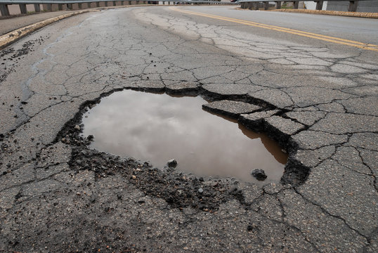

CAMERA CAM-01
FORWARD DASHCAM
•
29.4 FPS
•
AI PIPELINE ONLINE

📷
Pothole Evidence
Pothole detection evidence is being displayed.
CAM-01
//
FORWARD
INFERENCE:
18.2 ms
|
FPS:
29.4
🚨
POTHOLE • 90% • HIGH
BBOX: [71.66, 114.67, 459.37, 303.32]
HDG:
184°
|
SPEED:
38.4 KM/H
|
ALT:
14 m
GPS:
19.0760, 72.8777
MODEL:
YOLOv8 Pothole-Edge
•
RESOLUTION:
1920 × 1080
•
INPUT:
Forward Road Surface
AI PIPELINE ONLINE